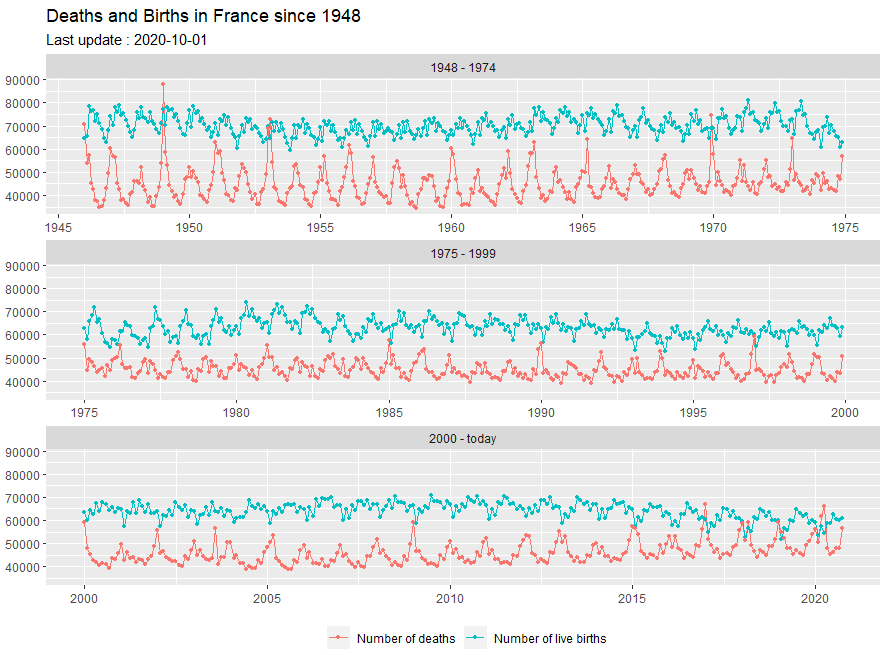

Overview
The insee package contains tools to easily download data and metadata from INSEE main database (BDM).
Using embedded SDMX queries, get the data of more than 150 000 INSEE series.
Have a look at the detailed SDMX web service page with the following link.
This package is a contribution to reproducible research and public data transparency.
Installation & Loading
# Get the development version from GitHub # install.packages("devtools") # devtools::install_github("InseeFr/R-Insee-Data") # Get the CRAN version install.packages("insee") # examples below use tidyverse packages library(tidyverse) library(insee)
French GDP growth rate

library(tidyverse) library(insee) dataset_list = get_dataset_list() df_idbank_list_selected = get_idbank_list("CNT-2014-PIB-EQB-RF") %>% # Gross domestic product balance filter(FREQ == "T") %>% #quarter add_insee_title() %>% #add titles filter(OPERATION == "PIB") %>% #GDP filter(NATURE == "TAUX") %>% #rate filter(CORRECTION == "CVS-CJO") #SA-WDA, seasonally adjusted, working day adjusted idbank = df_idbank_list_selected %>% pull(idbank) data = get_insee_idbank(idbank) %>% add_insee_metadata() ggplot(data, aes(x = DATE, y = OBS_VALUE)) + geom_col() + ggtitle("French GDP growth rate, quarter-on-quarter, sa-wda") + labs(subtitle = sprintf("Last updated : %s", data$TIME_PERIOD[1]))
Deaths and Births

library(insee) library(tidyverse) insee_dataset = get_dataset_list() list_idbank_selected = get_idbank_list("DECES-MORTALITE", "NAISSANCES-FECONDITE") %>% filter(FREQ == "M") %>% #monthly filter(REF_AREA == "FM") %>% #metropolitan territory filter(DEMOGRAPHIE %in% c("NAISS", "DECES")) idbank_selected = list_idbank_selected %>% pull(idbank) data = get_insee_idbank(idbank_selected) %>% split_title() %>% mutate(period = case_when(DATE < "1975-01-01" ~ "1948 - 1974", DATE >= "1975-01-01" & DATE < "2000-01-01" ~ "1975 - 1999", DATE >= "2000-01-01" ~ "2000 - today" )) x_dates = seq.Date(from = as.Date("1940-01-01"), to = Sys.Date(), by = "5 years") last_date = data %>% pull(DATE) %>% max() ggplot(data, aes(x = DATE, y = OBS_VALUE, colour = TITLE_EN2)) + facet_wrap(~period, scales = "free_x", ncol = 1) + geom_line() + geom_point(size = 0.9) + ggtitle("Deaths and Births in France since 1948") + labs(subtitle = sprintf("Last update : %s", last_date)) + scale_x_date(breaks = x_dates, date_labels = "%Y") + theme( legend.position = "bottom", legend.title = element_blank(), axis.title.x = element_blank(), axis.title.y = element_blank() )
Population Map

library(insee) library(tidyverse) library(raster) library(rgdal) library(geosphere) library(broom) library(viridis) library(mapproj) dataset_list = get_dataset_list() list_idbank = get_idbank_list("TCRED-ESTIMATIONS-POPULATION") %>% filter(AGE == "00-") %>% #all ages filter(SEXE == 0) %>% #men and women filter(str_detect(REF_AREA, "^D")) %>% #select only departements add_insee_title() list_idbank_selected = list_idbank %>% pull(idbank) # get population data by departement pop = get_insee_idbank(list_idbank_selected) #get departements' geographical limits FranceMap <- raster::getData(name = "GADM", country = "FRA", level = 2) # extract the population by departement in 2020 pop_plot = pop %>% group_by(TITLE_EN) %>% filter(DATE == "2020-01-01") %>% mutate(dptm = gsub("D", "", REF_AREA)) %>% filter(dptm %in% FranceMap@data$CC_2) %>% mutate(dptm = factor(dptm, levels = FranceMap@data$CC_2)) %>% arrange(dptm) %>% mutate(id = dptm) vec_pop = pop_plot %>% pull(OBS_VALUE) # add population data to the departement object map FranceMap@data$pop = vec_pop get_area = function(long, lat){ area = areaPolygon(data.frame(long = long, lat = lat)) / 1000000 return(data.frame(area = area)) } # extract the departements' limits from the spatial object and compute the surface FranceMap_tidy_area <- broom::tidy(FranceMap) %>% group_by(id) %>% group_modify(~get_area(long = .x$long, lat = .x$lat)) FranceMap_tidy <- broom::tidy(FranceMap) %>% left_join(FranceMap_tidy_area) # mapping table dptm_df = data.frame(dptm = FranceMap@data$CC_2, dptm_name = FranceMap@data$NAME_2, pop = FranceMap@data$pop, id = rownames(FranceMap@data)) FranceMap_tidy_final_all = FranceMap_tidy %>% left_join(dptm_df, by = "id") %>% mutate(pop_density = pop/area) %>% mutate(density_range = case_when(pop_density < 40 ~ "< 40", pop_density >= 40 & pop_density < 50 ~ "[40, 50]", pop_density >= 50 & pop_density < 70 ~ "[50, 70]", pop_density >= 70 & pop_density < 100 ~ "[70, 100]", pop_density >= 100 & pop_density < 120 ~ "[100, 120]", pop_density >= 120 & pop_density < 160 ~ "[120, 160]", pop_density >= 160 & pop_density < 200 ~ "[160, 200]", pop_density >= 200 & pop_density < 240 ~ "[200, 240]", pop_density >= 240 & pop_density < 260 ~ "[240, 260]", pop_density >= 260 & pop_density < 410 ~ "[260, 410]", pop_density >= 410 & pop_density < 600 ~ "[410, 600]", pop_density >= 600 & pop_density < 1000 ~ "[600, 1000]", pop_density >= 5000 & pop_density < 10000 ~ "[5000, 10000]", pop_density >= 20000 ~ ">= 20000" )) %>% mutate(`people per square kilometer` = factor(density_range, levels = c("< 40","[40, 50]", "[50, 70]","[70, 100]", "[100, 120]", "[120, 160]", "[160, 200]", "[200, 240]", "[240, 260]", "[260, 410]", "[410, 600]", "[600, 1000]", "[5000, 10000]", ">= 20000"))) ggplot(data = FranceMap_tidy_final_all, aes(fill = `people per square kilometer`, x = long, y = lat, group = group) , size = 0, alpha = 0.9) + geom_polygon() + geom_path(colour = "white") + coord_map() + theme_void() + scale_fill_viridis(discrete = T) + ggtitle("Distribution of the population within French territory in 2020") + labs(subtitle = "the density displayed here is an approximation, it should not be considered as an official statistics")
How to avoid proxy issues ?
Sys.setenv(http_proxy = "my_proxy_server") Sys.setenv(https_proxy = "my_proxy_server")
Support
Feel free to contact me with any question about this package using this e-mail address.